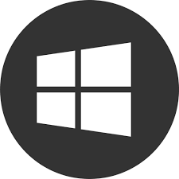

Some of our vendors offer educational software packages for free for the Engineering departments. Below you will find a list of all the software that is available for download as a student/cadet or faculty of VMI.
Please note the following when uninstalling: You can choose to perform a standard, custom, or complete uninstall.
The standard uninstall removes Program Files and Folders associated with a Solidworks product. By default, all Solidworks products for the selected release are specified for a standard uninstall.
A custom uninstall allows you to choose and removes one or more of the following items: Program Files and Folders, registry keys and data folders, such as the Solidworks Toolbox, and files and folders from the original download location.
A complete uninstall removes the installation directories, registry keys, and data folders.

+ R to bring up the run command prompt/textfield